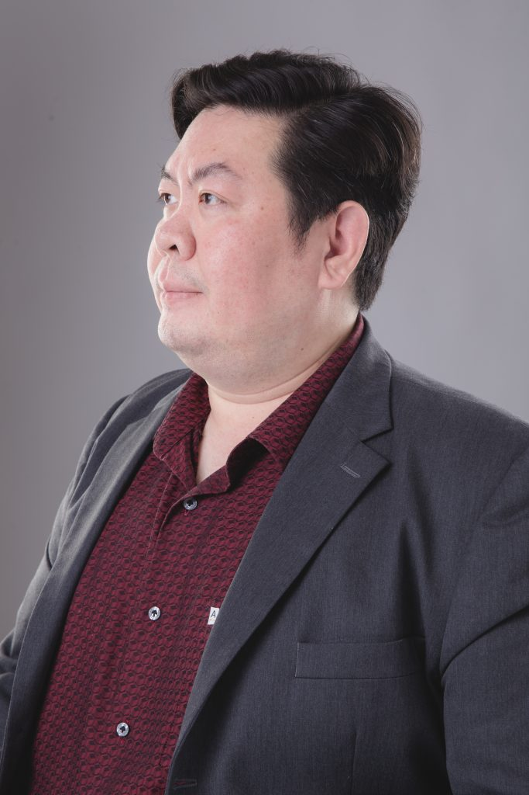

วิศวกรรมคอมพิวเตอร์
มหาวิทยาลัยเทคโนโลยีพระจอมเกล้าธนบุรี
เชื่อมโลกเทคโนโลยี การเรียนรู้ และความคิดสร้างสรรค์ ผ่านงานสอน งานวิจัย และการลงมือพัฒนา

อาจารย์ ดร.วศิน ภิรมย์ หรือ “โน้ต” ทำงานในจุดเชื่อมต่อของวิศวกรรมซอฟต์แวร์ การพัฒนาเกม และการศึกษา ปัจจุบันเป็นหัวหน้าสาขาวิชาวิศวกรรมซอฟต์แวร์และระบบสารสนเทศ สถาบันเทคโนโลยีปทุมวัน
จากการพัฒนาเกมและออกแบบหลักสูตร สู่การวิจัยปัญญาประดิษฐ์เพื่อช่วยให้ผู้พิการทางการมองเห็นเข้าถึงข้อมูลภาพ รวมถึงงานวิจัยด้านพลังงาน และงานสร้างสรรค์ทั้งหนังสือ วิดีโอ และดนตรี
ข้อมูลจากเว็บไซต์สาขาวิชามหาวิทยาลัยเทคโนโลยีพระจอมเกล้าธนบุรี
จุฬาลงกรณ์มหาวิทยาลัย
สถาบันเทคโนโลยีปทุมวัน
ประวัติการศึกษา: โปรไฟล์ผู้สอนบน SkillLane
การเขียนโปรแกรม การพัฒนาแอปพลิเคชัน และการออกแบบหลักสูตรคอมพิวเตอร์ ทั้งภาษาไทยและภาษาอังกฤษ
SOFTWARE & APPLICATIONSถ่ายทอดการพัฒนาเกมด้วย Unity 3D และการสร้างสื่อการเรียนรู้ในโลกเสมือน ด้วย Unity และ Spatial.io
GAME DEVELOPMENT & METAVERSEการประยุกต์ AI ในการผลิตคอนเทนต์ วิดีโอ และการเรียนรู้ เชื่อมเทคโนโลยีเข้ากับความคิดสร้างสรรค์
AI & DIGITAL CONTENTร่วมเป็นวิทยากรถ่ายทอดประสบการณ์อุตสาหกรรมการพัฒนาเกม ในโครงการของ สพฐ. รุ่นที่ 1–2
อ่านข่าวกิจกรรมวิทยากรหัวข้อการพัฒนาสื่อ Eduverse ด้วย Unity 3D ในการประชุมเชิงปฏิบัติการด้านนวัตกรรมการเรียนรู้
อ่านข่าวกิจกรรมผลงานที่พบในวารสารและฐานข้อมูลสถาบัน
ครอบคลุม AI การเข้าถึงข้อมูล และความยั่งยืน
ศึกษาระบบบูรณาการพลังงานแสงอาทิตย์ การผลิตไฮโดรเจน และเซลล์เชื้อเพลิง โดยใช้น้ำเสียจำลองจากครัวเรือน
ร่วมวิจัยการใช้ไบโอชาร์จากทางใบปาล์มน้ำมัน เพื่อศึกษาการเจริญเติบโตและสารพฤกษเคมีของข้าวอินดิกา
พัฒนากระบวนการบรรยายภาพด้วยเสียงภาษาไทย ใช้การตรวจจับวัตถุและการประมวลผลภาษา เพื่อช่วยผู้พิการทางการมองเห็น
การตรวจจับวัตถุและตำแหน่งด้วย CLIP และคำสั่งเสียงภาษาไทยสำหรับผู้พิการทางการมองเห็น
งานวิจัยการผลิตไฮโดรเจนด้วยกระบวนการแยกน้ำแบบ PEM เพื่อพลังงานยั่งยืน
ศึกษาทดลองระบบผสมผสานเซลล์แสงอาทิตย์ เครื่องแยกน้ำ และเซลล์เชื้อเพลิงแบบ PEM
2543 · NSC ครั้งที่ 3
รางวัลชนะเลิศถ้วยพระราชทานฯ ประเภทโปรแกรมเพื่อส่งเสริมการเรียนรู้
2548 · TSIM 2005
ชนะเลิศการประกวดการจำลองด้วยคอมพิวเตอร์แห่งประเทศไทย ครั้งที่ 1
เกียรติคุณศิษย์เก่า
ได้รับการยกย่องเป็นศิษย์เก่าผู้ประสบความสำเร็จ ในโอกาสครบรอบ 50 ปี มจธ.
มีชื่อเป็นผู้ร่วมพัฒนาโครงงาน 3-D Thai Game “Genius Exterminates Ghosts” ในสาขาวิศวกรรมคอมพิวเตอร์ มจธ.
พัฒนาหลักสูตร 3D Games Developer และ E-Learning ให้ NetDesign พร้อมก่อตั้งบริษัท ไอยรา เอ็นเตอร์เทนเม้นท์ ในปี 2546
เคยเป็นอาจารย์ที่มหาวิทยาลัยบูรพา มหาวิทยาลัยราชภัฏสวนสุนันทา และ มจธ. รวมถึงเป็นอาจารย์พิเศษที่มหาวิทยาลัยกรุงเทพและมหาวิทยาลัยศรีนครินทรวิโรฒ
ทำงานด้านหลักสูตร การสอน และวิจัยในสาขาวิศวกรรมซอฟต์แวร์และระบบสารสนเทศ พร้อมถ่ายทอดความรู้ผ่านการอบรมและสื่อออนไลน์
เรียนรู้ สร้างสรรค์ และแบ่งปันในหลายรูปแบบ
ติดตามเนื้อหาและวิดีโอผ่านช่อง YouTube
สำรวจช่อง YouTubeผลงานอีบุ๊กในนาม “อัจฉริยะปราบผี” บน MEB
เปิดชั้นหนังสือพื้นที่ของการแต่งเพลง การร้อง และการสร้างสรรค์ดนตรี
ฟัง Playlist บน YouTubeสำรวจผลงานภาพถ่ายในโปรไฟล์ Wasin Pirom
ชมภาพบน Pexelsประวัติบน SkillLane ระบุการให้สัมภาษณ์ด้านเกมและเทคโนโลยีในรายการ IT Genius, IT Eleven, Intelligent Guru และ MCOT dot net ส่วนรายงานของ MGR Online ในปี 2556 ระบุการลงสมัครผู้ว่าราชการกรุงเทพมหานคร ในนามอิสระ หมายเลข 13 ข้อมูลส่วนนี้เป็นประวัติในอดีต ไม่ใช่ตำแหน่งปัจจุบัน
รวบรวมและตรวจสอบข้อมูลสาธารณะ ณ 16 พฤศจิกายน 2569 จากชื่อ “วศิน ภิรมย์” และ “Wasin Pirom” คัดเลือกข้อมูลที่ระบุตัวบุคคลได้ ไม่ใช่รายการข้อมูลทั้งหมดบนอินเทอร์เน็ต
ติดต่อเรื่องการบรรยาย การพัฒนาหลักสูตร
การเรียนรู้ด้านเทคโนโลยี และความร่วมมือทางวิชาการ